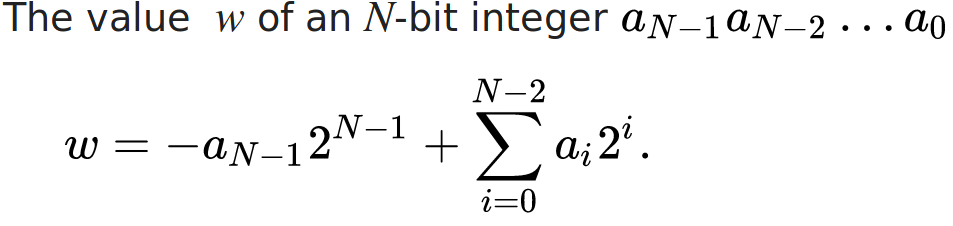
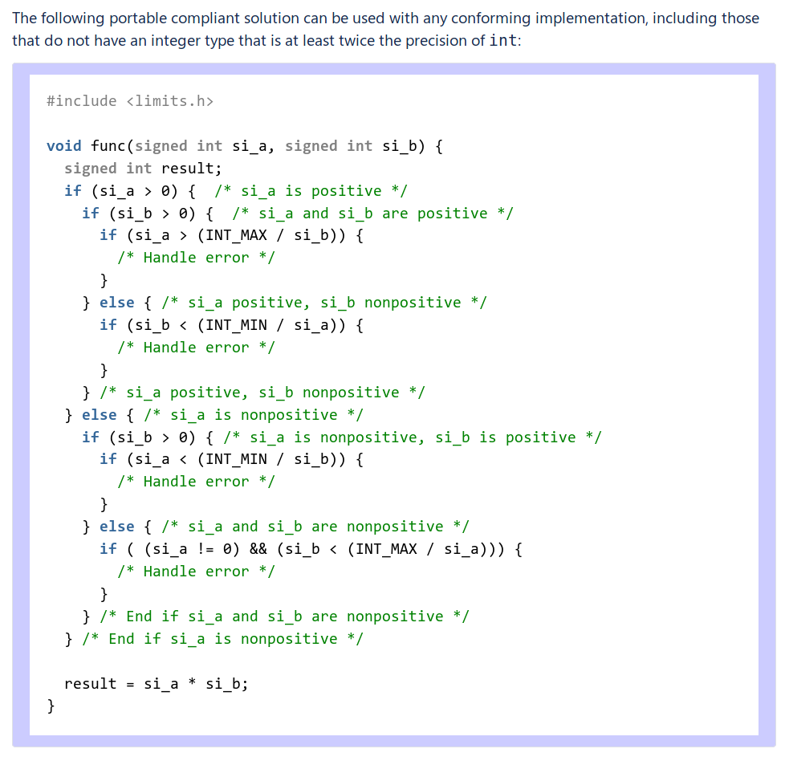
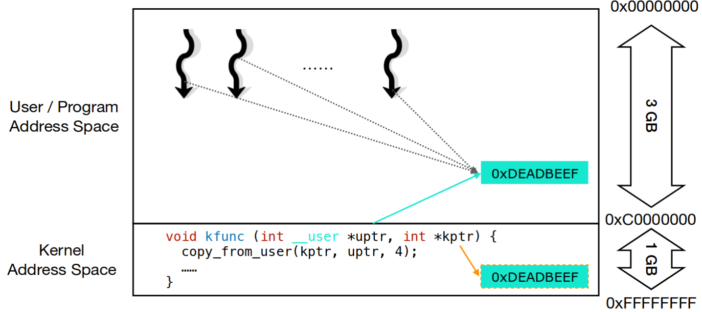
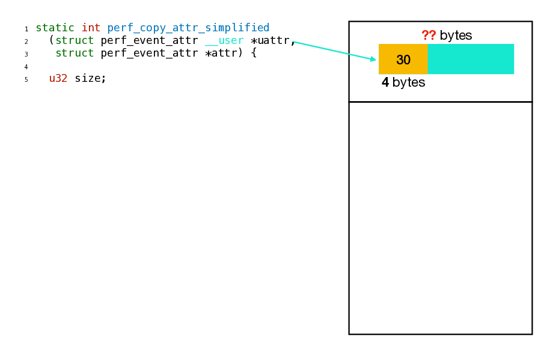
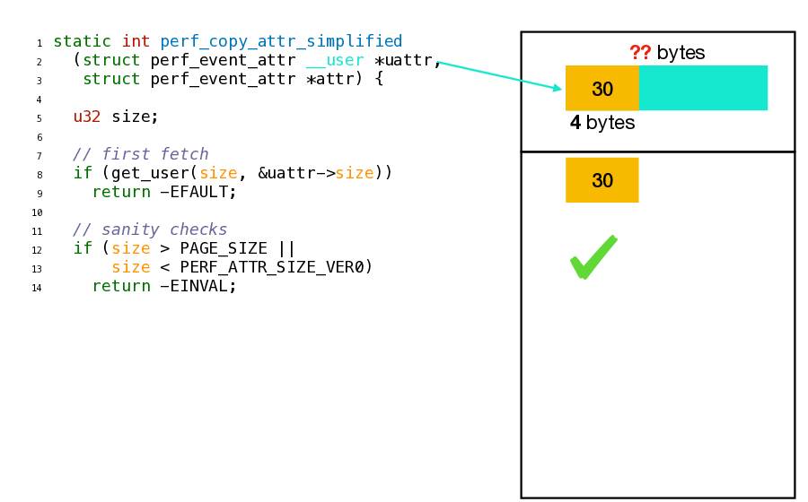
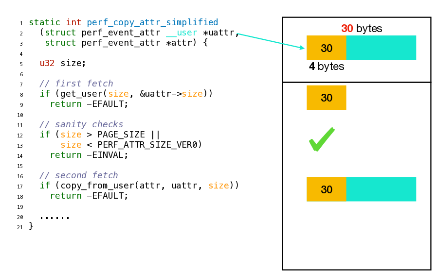
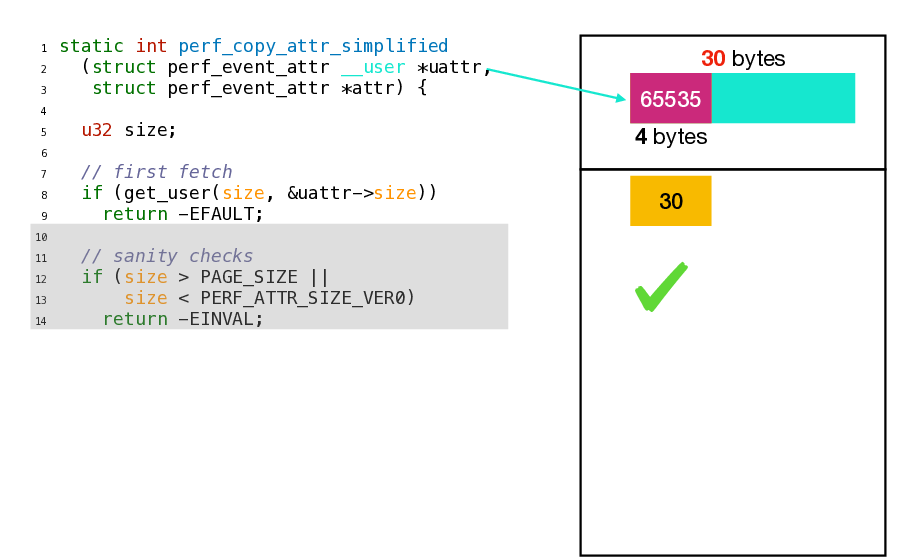
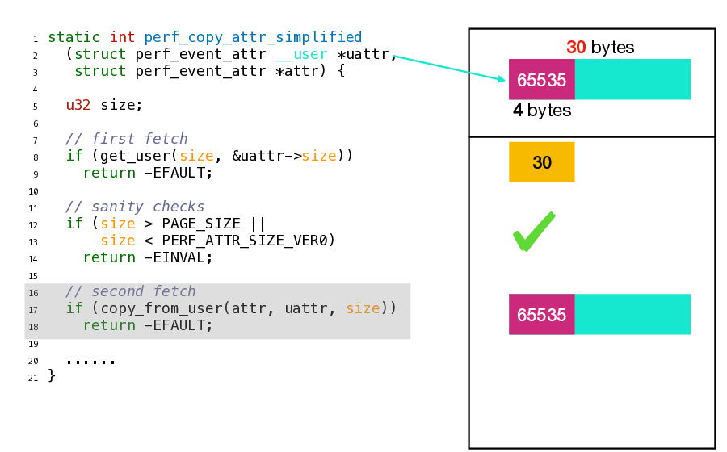

BUG: Trigger Incorrect Memory Copy

Taesoo Kim
Taesoo Kim

e.g., in x86 (32-bit, 4-byte):
- 0x00000000 -> 0
- 0x7fffffff -> 2147483648 (INT_MAX)
- 0x80000000 -> -2147483649 (INT_MIN)
- 0xffffffff -> -1 0x00000001 + 0x00000002 = 0x00000003 ( 1 + 2 = 3)
0xffffffff + 0x00000002 = 0x00000001 (-1 + 2 = 1)
0xffffffff + 0xfffffffe = 0xfffffffd (-1 +-2 =-3)
range(signe integer) = [-2^31-1, 2^31] = [-2147483649, 2147483648]
range(unsigned integer) = [0, 2^32-1] = [0, 4294967295] 0x00000001 + 0x00000002 = 0x00000003 ( 1 + 2 = 3)
-> CF: 0 OF: 0 SF: 0
0xffffffff + 0x00000002 = 0x00000001 (-1 + 2 = 1)
-> CF: 1 OF: 0 SF: 0
0x80000000 + 0xffffffff = 0x7fffffff (-2147483649 + -1 = 2147483648)
-> CF: 1 OF: 1 SF: 0
0x7fffffff + 0x00000001 = 0x80000000 ( 2147483648 + 1 = -2147483649)
-> CF: 0 OF: 1 SF: 1 x86 (32b) x86_64 (64b)
char : 1 bytes 1 bytes
unsigned char : 1 bytes 1 bytes
short : 2 bytes 2 bytes
unsigned short : 2 bytes 2 bytes
int : 4 bytes 4 bytes
unsigned int : 4 bytes 4 bytes
(*) long : 4 bytes 8 bytes
(*) unsigned long : 4 bytes 8 bytes
long long : 8 bytes 8 bytes
unsigned long long : 8 bytes 8 bytes
(*) size_t : 4 bytes 8 bytes
(*) ssize_t : 4 bytes 8 bytes
(*) void* : 4 bytes 8 bytes// @fs/binfmt_elf.c
static unsigned long randomize_stack_top(unsigned long stack_top) {
unsigned int random_variable = 0;
if ((current->flags & PF_RANDOMIZE) &&
!(current->personality & ADDR_NO_RANDOMIZE)) {
random_variable = get_random_int() & STACK_RND_MASK;
* random_variable <<= PAGE_SHIFT;
}
return PAGE_ALIGN(stack_top) - random_variable;
}// @fs/binfmt_elf.c
static unsigned long randomize_stack_top(unsigned long stack_top) {
* unsigned long random_variable = 0;
if ((current->flags & PF_RANDOMIZE) &&
!(current->personality & ADDR_NO_RANDOMIZE)) {
random_variable = get_random_int() & STACK_RND_MASK;
* random_variable <<= PAGE_SHIFT;
}
return PAGE_ALIGN(stack_top) - random_variable;
}// @src/wasm/function-body-decoder-impl.h
// count: unsigned int
// type_list->size(): size_t
// kV8MaxWasmFunctionLocals: size_t
+ DCHECK_LE(type_list->size(), kV8MaxWasmFunctionLocals);
+ if (count
+ > kV8MaxWasmFunctionLocals - type_list->size()) {
decoder->error(decoder->pc()-1, "local count too large");
return false;
}// @NaClSandboxAddr()
+--> 32 bytes in x32
|
+------------------
return addr & ~(uintptr_t)((1 << nap->align_boundary) - 1);
+-------------------------
|
+--> (1 << 32) == 1 in gcc!Ref. https://bugs.chromium.org/p/nativeclient/issues/detail?id=245
void func(signed int si_a, signed int si_b) {
signed int result;
signed long long tmp;
tmp = (signed long long)si_a * (signed long long)si_b;
/* If the product cannot be represented as a 32-bit integer,
handle as an error condition. */
if ((tmp > INT_MAX) || (tmp < INT_MIN)) {
/* Handle error */
} else {
result = (int)tmp;
}
/* ... */
}
// Returns true if we overflowed, false if we didn't
bool Int64Math::Mul(int64 left, int64 right, int64 *pResult) {
#if defined(_M_X64)
// (I)MUL (Q/64) R[D/A]X <- RAX * r/m64
int64 high;
*pResult = _mul128(left, right, &high);
return ((*pResult > 0) && high != 0) \
|| ((*pResult < 0) && (high != -1));
#else
*pResult = left * right;
return (left != 0 && right != 0 \
&& (*pResult / left) != right);
#endif
}static inline bool
check_mul_overflow_size_t(size_t left, size_t right,
size_t *result) {
/* size_t is unsigned
so the behavior on overflow is defined. */
*result = left * right;
size_t half_size_t \
= ((size_t) 1) << (8 * sizeof (size_t) / 2);
if ((left | right) >= half_size_t) {
if (right != 0 && *result / right != left)
return true;
}
return false;
}





/* If we're handed a bigger struct than we know of,
* ensure all the unknown bits are 0. */
if (size > sizeof(*attr)) {
...
for (; addr < end; addr += sizeof(unsigned long)) {
ret = get_user(val, addr);
if (ret)
return ret;
if (val)
goto err_size;
}
}
ret = copy_from_user(attr, uattr, size); // Q. size? /* If we're handed a bigger struct than we know of,
* ensure all the unknown bits are 0. */
if (size > sizeof(*attr)) {
...
for (; addr < end; addr += sizeof(unsigned long)) {
ret = get_user(val, addr);
if (ret)
return ret;
if (val)
goto err_size;
}
+ size = sizeof(*attr);
}
ret = copy_from_user(attr, uattr, size); // Q. size?struct usbdevfs_connectinfo {
unsigned int devnum; // 4 bytes
unsigned char slow; // 1 bytes
};
sizeof(struct usbdevfs_connectinfo) == 8
|<---------- 8B ---------->|
[devnum ][slw][padding]
|<-- 4B -->|<1B>|<--3B-->|Ref. Proactive Kernel Memory Initialization to Eliminate Data Leakages
§6.2.6.1/6 (C11, ISO/IEC 9899:201x)
When a value is stored in an object of structure (…), the bytes of the object representation that correspond to any padding values.
long join_session_keyring(const char *name) {
// refcnt is incremented on "success"!
keyring = find_keyring_by_name(name, false);
if (PTR_ERR(keyring) == -ENOKEY) { ... }
else if (IS_ERR(keyring)) { ... }
} else if (keyring == new->session_keyring) {
ret = 0;
goto error2;
}
error2:
mutex_unlock(&key_session_mutex);
error:
abort_creds(new);
return ret;
}